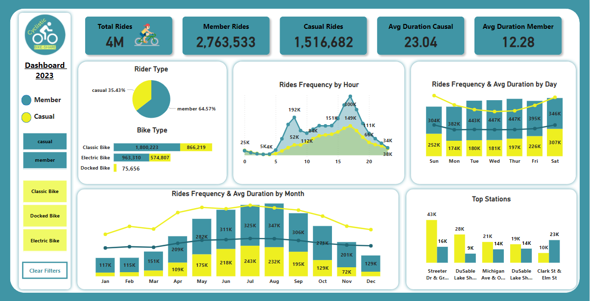
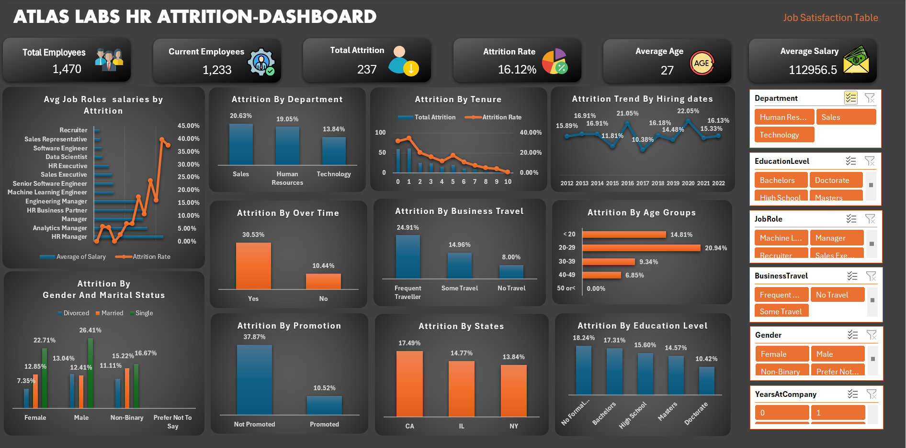
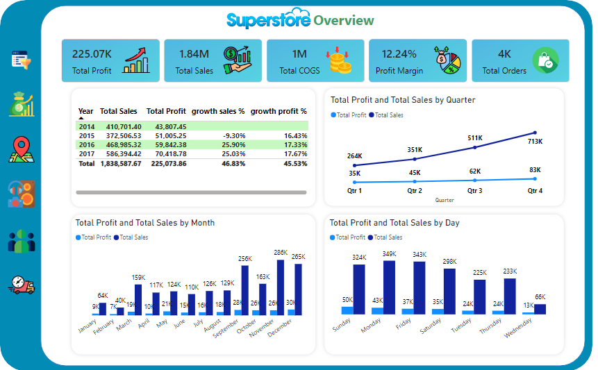
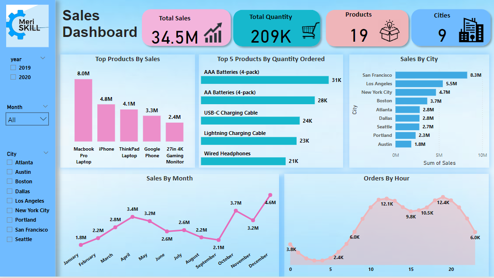

Utilization of Machine Learning (ML) in Prediction of House Pricing at the Real Estate Industry
Business Analytics Master’s degree graduation project
I utilized Python to build multiple machine learning regression models for predicting house prices. I applied data preprocessing, feature engineering, and model evaluation techniques to enhance prediction accuracy. Key models such as linear regression, non-linear models, and ensemble methods were evaluated, with XGBoost achieving the highest performance. This project demonstrated my ability to apply machine learning to real-world problems, providing actionable insights that can guide pricing strategies in the real estate industry.

Analyzed a year of Cyclistic bike-share data to identify trends between casual and annual riders. Used Microsoft SQL for data extraction, analysis, and Power BI for visualization. The project provided insights into rider behavior, helping to develop strategies for converting casual riders into annual members, which is crucial for improving subscription rates and business growth.

Analyzed Atlas Lab employee data to identify key factors driving voluntary attrition. Utilized Excel for data cleaning and analysis to examine key drivers metrics. This project provided actionable insights for improving retention strategies, which is essential for reducing attrition and maintaining organizational stability.

Analyzed profitability and sales data for a retail superstore using PostgreSQL and Power BI to identify trends and optimize performance. Focused on product categories and subcategories, uncovering insights into profitability and customer behavior to inform strategic decision-making.

Analyzed sales data to uncover trends, identify top-selling products, and calculate key revenue metrics. Examined monthly and seasonal patterns to inform inventory and marketing decisions. Created visualizations to effectively communicate insights and support recommendations for optimizing sales strategies.